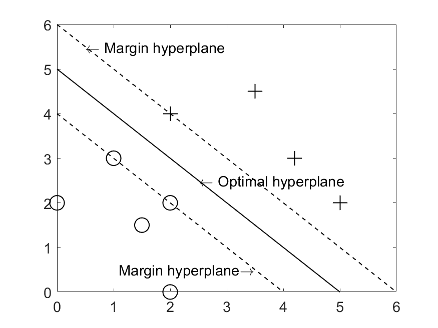
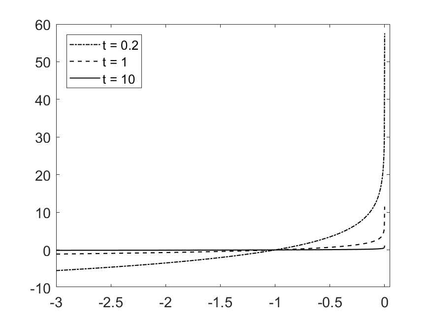
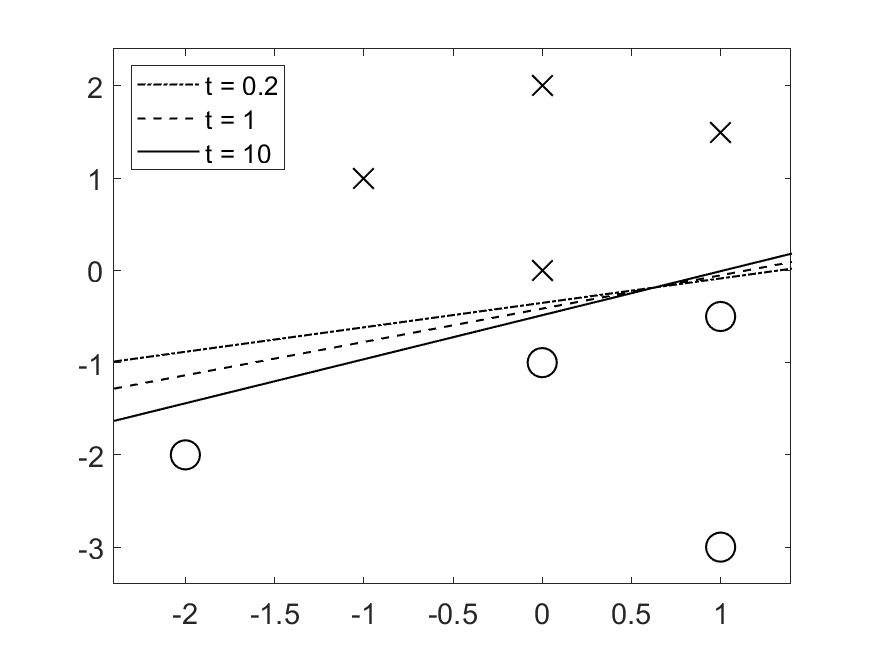
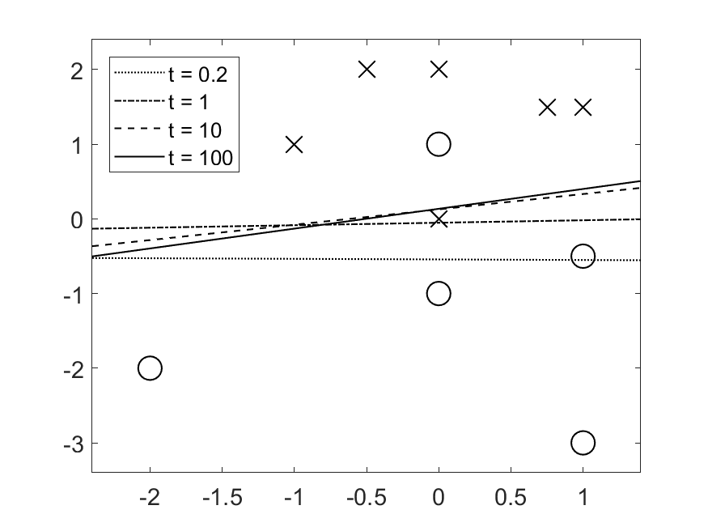

Support Vector Machine (SVM) using log-barrier method
This project was undertaken as a part of course (Convex optimization) requirement under the guidance of Prof. Kunal N. Chaudhary.
SVM is a popular classification algorithm utilized in applications of artificial intelligence to separate dissimilar data. Given a two class training dataset, SVM generates an optimal separating hyperplane (by maximizing the margin) to sequester two class of data using a constrained quadratic convex optimization formulation.

Optimal hyperplane and margin hyperplane obtained using SVM optimization problem
Log-barrier method is an interior point method used to convert an inequality constrained optimization problem to an approximate constrained problem using a logarithmic penalty function. The solution for the latter problem asymptotically converges to true solution as the value of a parameter (t) in the penalty function is made arbitrarily large.

Approximate penalty function for increasing value of t
If we use very large value of t to run our optimization, we get poor results due to large value of Hessian of objective function at the boundary of solution space. Hence, optimization is run multiple times with increasing value of t. Solution from previous iteration is used as starting point for current iteration. This technique is known as central path method.
Results

Optimal hyperplane for linearly separable data obtained from SVM optimization problem after incorporating the concept of log-barrier method and central path (t is the parameter of penalty function. Larger the value of t, better the result obtained using central path.)

Optimal hyperplane for linearly inseparable data obtained from SVM optimization problem after incorporating the concept of log-barrier method and central path (t is the parameter of penalty function. Larger the value of t, better the result obtained using central path.)